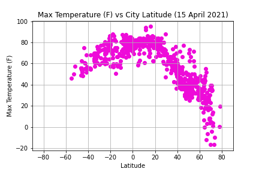
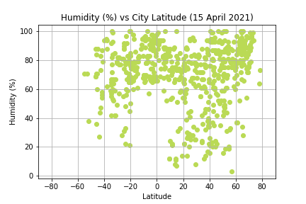
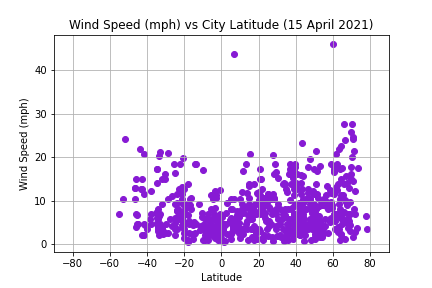

Max Temperature vs Latitude
Humidity vs Latitude
Cloudiness vs Latitude

Wind Speed vs Latitude
Overall Observations and Trends
Detailed plots related to these observations can be seen on each trend's individual page.
- The linear regression for all of the data points shows, even when weakly correlated, opposite correlations (positive vs negative) for the northern and southern hemispheres. This makes sense, since the latitude values for the southern hemisphere (-90 to 0) go towards the equator on the plots while the latitude values for the northern hemisphere (0 to 90) go away from the equator on the plot due to the geometry of the earth (a rough sphere).
- It's interesting that only the max temperature of the cities has a strong correlation to the latitude of the cities, with an R-squared value of 0.77 for the northern hemisphere and 0.48 for the southern hemisphere, especially since wind speed, humidity, and cloudiness depend on environmental factors, and it would make sense for environmental factors to be somewhat consistent based on latitude since temperature plays a small part in the environmental factors of a region.
- The linear regressions were performed by hemisphere since the data was curved and fit better with a quadratic regression. By splitting it up, the data became more linear, giving better correlation values.